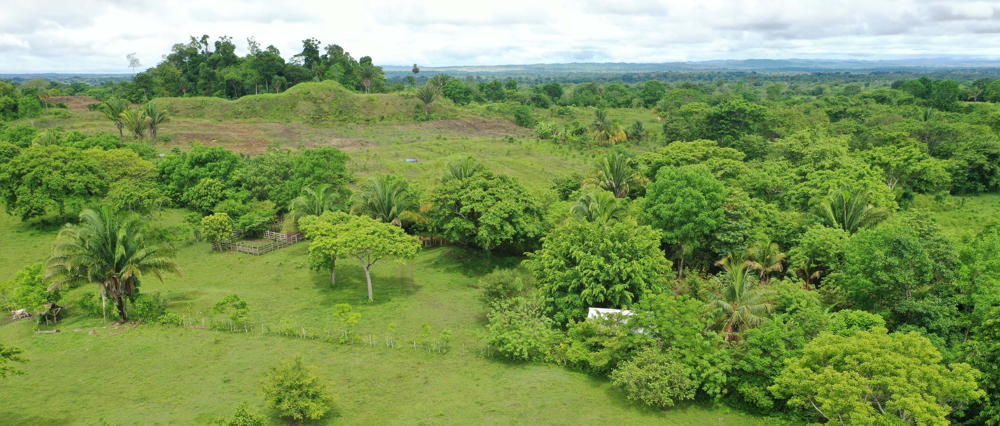

Dr. Whittaker Schroder
Assistant Professor
University of Florida
Dr. Whittaker (Whit) Schroder is a Postdoctoral Associate at the University of Florida in the Center for Latin American Studies and the Florida Institute for Built Environment Resilience, as well as a Consulting Scholar at the Penn Cultural Heritage Center. My research focuses on the resilience of individuals and communities through land use and environmental change, from an archaeological perspective. I have most recently engaged with the collection, processing, and analysis of several LiDAR datasets in southern Mexico to understand past settlement systems, agricultural intensification, and fortifications. I have also taught and mentored students from several disciplines, including Anthropology, Archaeology, Design and Planning, Latin American Studies, and Art History. I currently direct the Proyecto Arqueológico Bajo Lacantún (Lower Lacantún Archaeological Project) in Chiapas, Mexico.